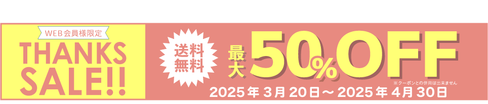
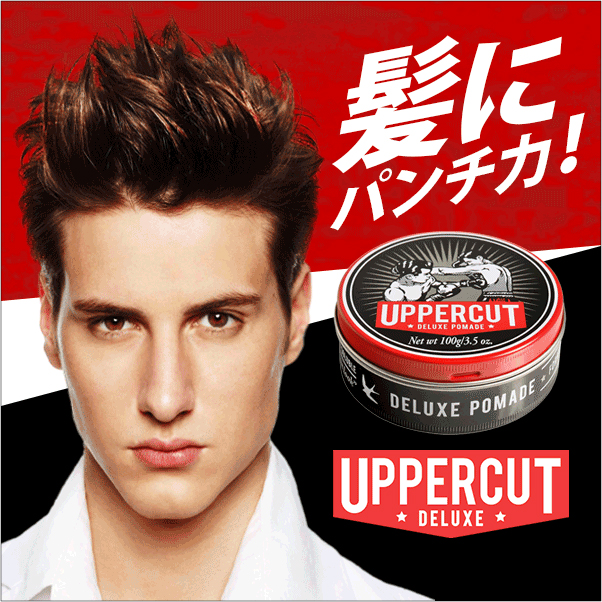
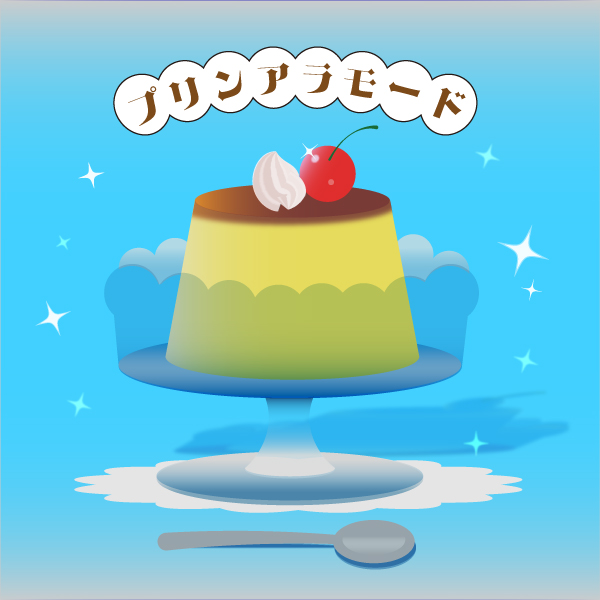
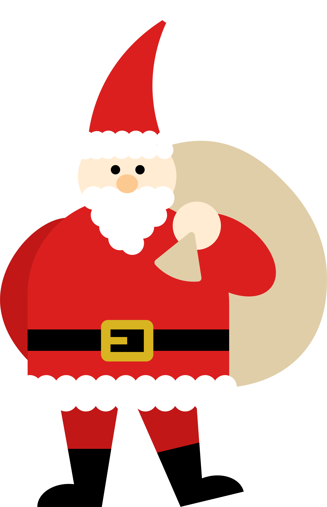
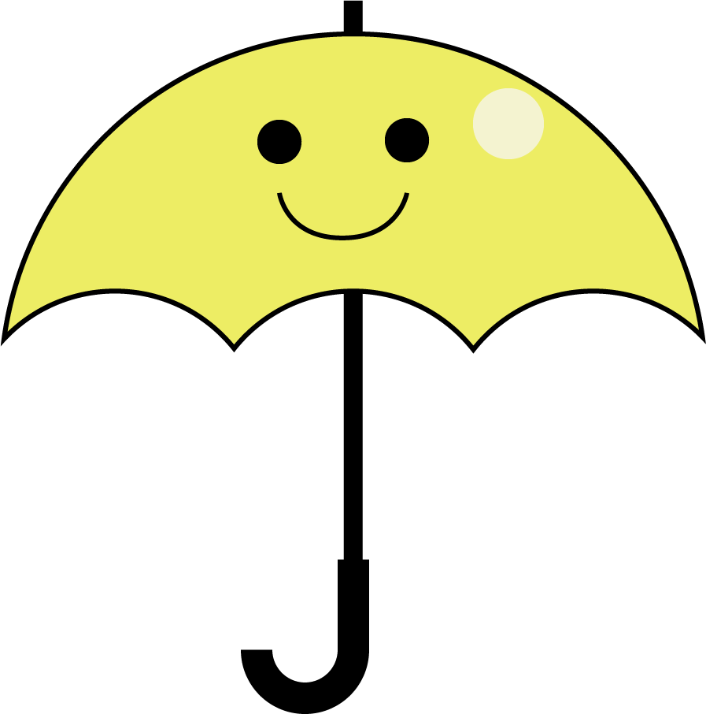
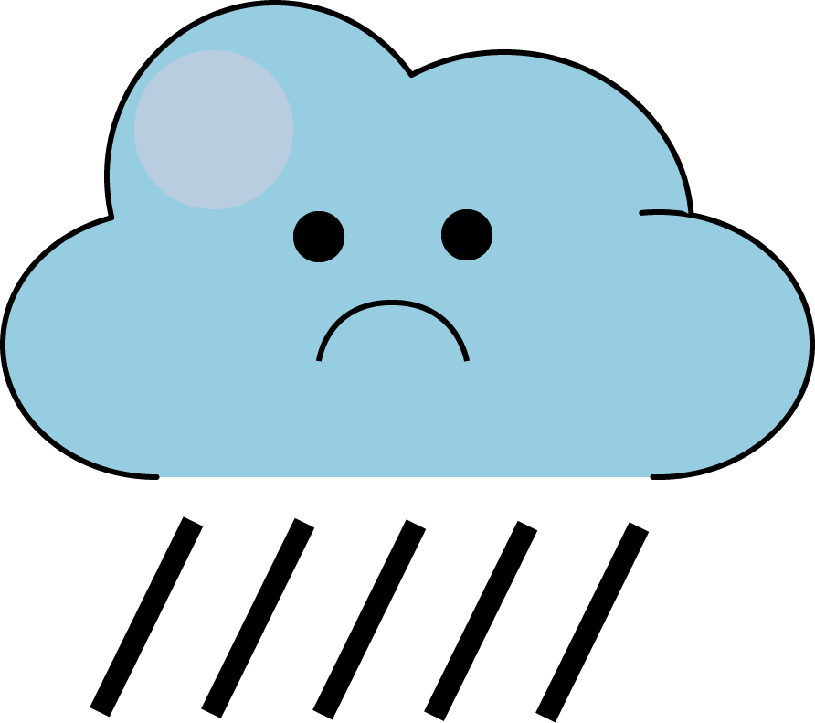
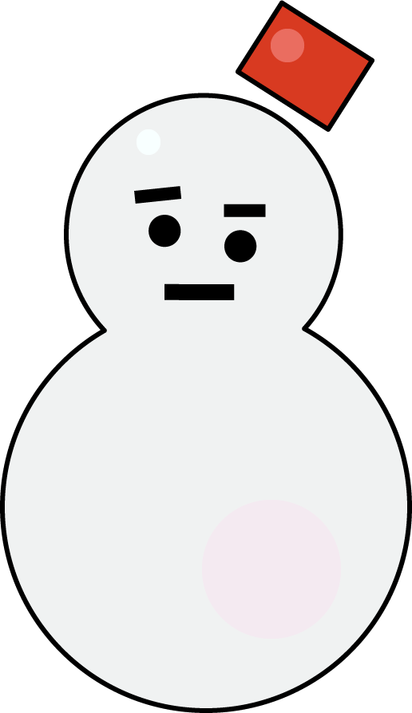

これはうちださきのデザインです。
これは内田早紀のデザインです。
これはうちださきのデザインです。
これは内田早紀のデザインです。
Design
NA Toursのバナー
-

クリックすると大きくなります。
-

クリックすると大きくなります。
-

クリックすると大きくなります。
デザインのポイント
自主制作の『NA Tours』のバナーです。エコツアー・アドベンチャーツアーの専門店なので、観光よりも冒険をアピールしています。
1. ターゲット
忙しい日常に追われる20代から40代の社会人。休暇に新しい経験を求めている人々。日々のルーチンに少し物足りなさを感じる大人たちへ、冒険の旅を提供します。
2. モチーフ
写真のバナーでは、ダイビングをしている人が海中でブクブクと冒険に誘っています。この美しい海での探検を想像しただけでワクワクしますよね。いつもどこかへ行ってみたいと考えている人に、冒険への一歩を踏み出す後押しをしたいと思い制作しました。
イラストのバナーは、それぞれ漢字の『探』と『険』をモチーフに制作しました。双眼鏡を使って新しい世界をのぞきこみ、立て看板が次の目的地を指しています。エコツアーの魅力が詰まったこのデザインは、自分の足で新しい世界を探しに行こうというワクワク感を表現しました。
3. アドベンチャーならNA Tours
「アドベンチャーならNA Tours」というキャッチコピーは、まだ知られていないNA
Toursが、冒険を求めている人々に向けて発信したものです。このフレーズは、「冒険に出かけよう！」という気持ちを呼び起こし、どこへ行こうか決めかねているけれど冒険心を持っている人たちに響きます。
また「アドベンチャーならNA
Tours」と伝えることで、NA Toursが冒険を体験できる場所として特別な存在であると感じてもらえるようにしています。
Illustrator
ファッションセールのバナー
-

ファイナルセール（スクエア）
-
ファイナルセール（小）
-

サンキューセール（スクエア）
-

サンキューセール（小）
デザインのポイント
授業で制作したファッションセールのバナーです。写真の切り抜き、影の追加、フォント・カラー選択、配置などを行いました。以下のポイントにこだわってデザインしています。
1. テーマと配色
左のバナーは春物服がテーマのため、これから暖かくなる太陽をイメージしたオレンジを採用しました。
右のバナーでは、春の桜をイメージしたピンクを使用し、季節感を表現しています。
2. フォントサイズとコントラスト
「SALE」や「○○％OFF」が一番目に飛び込んでくるよう、フォントサイズに強弱をつけて視覚的なインパクトを重視しました。
3. 配置の工夫
視線が自然にバナー内を一周し、外に逃げないように要素を配置しました。これにより、バナー内で情報が効果的に伝わる構図を作りました。
Illustrator
ヘアワックス『UPPERCUT』のバナー
-

クリックすると大きくなります。

デザインのポイント
このバナーは授業で制作したヘアワックス『UPPERCUT』の広告デザインです。写真の切り抜き、画像の加工、背景の制作、配置などを行いました。以下のポイントにこだわってデザインしています。
1. ターゲット
ターゲットは20代前半を中心とした、エネルギッシュな男性を想定しています。商品の「力強さ」を強調するため、人物写真の陰影をトーンカーブで調整し、彫りを深くしました。また、自然なハイライトを加えることで、勢いと活力が感じられる立体感を演出しています。さらに、視線をより印象的にするため、白目部分をマスクとブラシで調整し、目力をアップさせました。
2. ダイナミックで遊び心のあるデザイン
フォントは右上に大きく傾斜をつけることで、髪をしっかりキープするワックスの強力さを表現しました。また、背景には勢いよく絵の具を塗ったようなテクスチャーを使用し、若々しい遊び心とパワフルなイメージを強調しています。
3. インパクトある配色
商品のカラーである赤・白・黒の3色を全面的に押し出し、エネルギッシュなブランドイメージを強調しています。
Photoshop
食べ物のイラスト
-

クリックすると大きくなります。
-

クリックすると大きくなります。

デザインのポイント
Illustratorの練習として自主制作した、プリンアラモードとクリームソーダのイラストです。どちらもガラスの透明感や、重なり合う美しさを意識して制作しました。
Illustrator
クリスマスのパーツ
-

サンタ集会の壁紙
-

サンタのイラスト
-
クリスマスの作字
デザインのポイント
Illustratorの練習として制作した、クリスマス向けのPC用壁紙です。サンタのパーツを作成し、それをパターン化することで、サンタがクリスマスイブの夕方に決起集会を開く準備万端なシーンを表現しました。
Illustrator
お天気アイコン



デザインのポイント
授業で制作したお天気アイコンに色と表情を加えました。シルエットだけで直感的に識別できるデザインの中に、副次的な要素を削ぎ落とす重要性を実感しました。まだ完璧には達していませんが、このアプローチがデザインの本質に迫る鍵であると気づかされました。
Illustrator